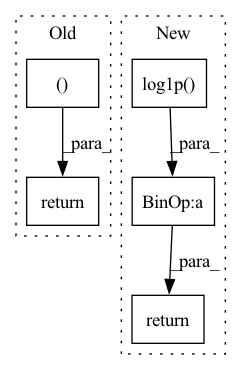

Pattern ID :9410

Before Change
def sigmoid_soft_cross_entropy(x, t, normalize=True, reduce="mean"):
return SigmoidSoftCrossEntropy(normalize, reduce).apply((x, t))[0]
After Change
_reduce = _reduce_table[reduce]
log1p_exp = torch.log1p(torch.exp(x))
loss = t * (log1p_exp - x) + (1 - t) * log1p_exp
if _reduce == "sum":
if normalize:
count = t.numel()
else:
count = len(t)
count = max(count, 1.)
loss /= count
return loss
In pattern: SUPERPATTERN
Frequency: 3
Non-data size: 5
Instances
Fragment ID: 33673861
Project Name: yuta-hi/pytorch_bayesian_unet
Commit Name: 55d3121d70f1ce110a10cacc47efeffb9534dced
Time: 2020-03-30
Author: hiasa.yuta.ht7@is.naist.jp
File Name: pytorch_bcnn/functions/loss/sigmoid_soft_cross_entropy.py
M Class Name: AnonimousClass
N Class Name: AnonimousClass
M Method Name: sigmoid_soft_cross_entropy(4)
N Method Name: sigmoid_soft_cross_entropy(4)
M Parent Class:
N Parent Class:
M File Name: pytorch_bcnn/functions/loss/sigmoid_soft_cross_entropy.py
N File Name: pytorch_bcnn/functions/loss/sigmoid_soft_cross_entropy.py
M Start Line: 22
M End Line: 22
N Start Line: 17
N End Line: 33
'>
Before Change
x += fuzz
x /= (1 + 2 * fuzz)
return np.log(x) - np.log(1 - x), -np.log(np.abs(x - x ** 2))
def sigmoid(x, fuzz=1e-2):
After Change
log_j = -np.log(x) - np.log1p(-x)
if fuzz:
log_j -= np.log(1 + 2 * fuzz)
return np.log(x) - np.log1p(-x), log_j
def sigmoid(x, fuzz=1e-12):
'>
Fragment ID: 33673863
Project Name: mj-will/nessai
Commit Name: efd0febbb8dabbe6855b918f21169437664f3acc
Time: 2021-08-23
Author: m.williams.4@research.gla.ac.uk
File Name: nessai/utils/rescaling.py
M Class Name: AnonimousClass
N Class Name: AnonimousClass
M Method Name: logit(2)
N Method Name: logit(2)
M Parent Class:
N Parent Class:
M File Name: nessai/utils/rescaling.py
N File Name: nessai/utils/rescaling.py
M Start Line: 284
M End Line: 286
N Start Line: 292
N End Line: 298
'>
Before Change
log_J = np.log(np.abs(x - x ** 2))
x *= (1 + 2 * fuzz)
x -= fuzz
return x, log_J
rescaling_functions = {"logit": (logit, sigmoid)}
After Change
Log Jacobian determinant.
x = np.divide(1, 1 + np.exp(-x))
log_j = np.log(x) + np.log1p(-x)
if fuzz:
x *= (1 + 2 * fuzz)
x -= fuzz
log_j += np.log(1 + 2 * fuzz)
return x, log_j
rescaling_functions = {"logit": (logit, sigmoid)}
'>
Fragment ID: 33673864
Project Name: mj-will/nessai
Commit Name: efd0febbb8dabbe6855b918f21169437664f3acc
Time: 2021-08-23
Author: m.williams.4@research.gla.ac.uk
File Name: nessai/utils/rescaling.py
M Class Name: AnonimousClass
N Class Name: AnonimousClass
M Method Name: sigmoid(2)
N Method Name: sigmoid(2)
M Parent Class:
N Parent Class:
M File Name: nessai/utils/rescaling.py
N File Name: nessai/utils/rescaling.py
M Start Line: 300
M End Line: 305
N Start Line: 320
N End Line: 326